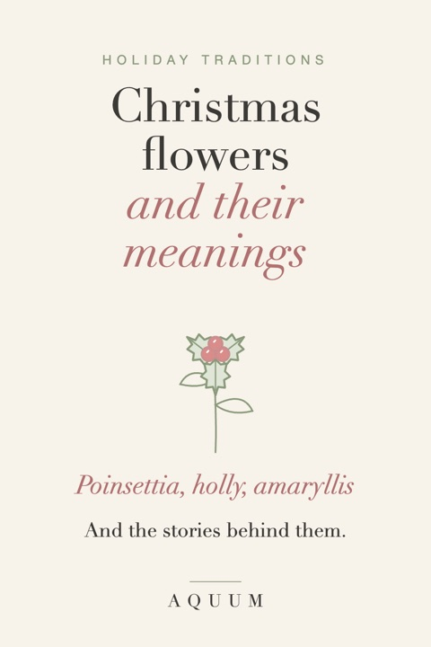

Christmas Flowers and Their Meanings: Poinsettia, Holly, Amaryllis and More
2026-10-03
Written by the team behind Aquum, a small birth flower gift shop. How we make money.

Every Christmas flower comes with a story. Some are old pagan winter plants that the holiday took in, others arrived much later from the other side of the world. Knowing what they mean turns a pot on the table, or a sprig on a card, into a small message.
Here are the classic Christmas flowers and plants, what each one says, and a few ideas for giving them.
Download the free Christmas flowers chart and coloring pages (PDF): the chart above plus a coloring page for each of the six flowers.
Poinsettia: good cheer and celebration
The poinsettia is native to Mexico, where it's called flor de Nochebuena, the Christmas Eve flower. A well-loved Mexican story tells of a poor girl with no gift for the Christ child, who brought a bundle of roadside weeds to church; on the altar they turned bright red. Its star shape is often read as the Star of Bethlehem.
It reached the United States in the 1820s through Joel Roberts Poinsett, the first American minister to Mexico, who gave it its English name. The red "petals" are actually leaves (bracts); the true flowers are the tiny yellow buds in the center.
Meaning: good cheer, celebration and success. Gift tip: pick one with tight yellow buds in the center: it will last longer. Keep it away from drafts and cold windows.
Holly: protection and good cheer
Long before Christmas, the Romans gave holly at Saturnalia, their midwinter festival, and in northern Europe it was hung over doors to keep bad luck out during the dark months. Christianity later read the spiky leaves as the crown of thorns and the red berries as drops of blood.
Holly is also December's second birth flower, which makes it a natural choice for a December birthday. More in our holly birth flower guide.
Meaning: protection, good cheer and domestic happiness.
Amaryllis: radiant beauty and determination
The amaryllis grows from a big bulb and blooms indoors in the middle of winter, with huge trumpet flowers in red, white or striped. Its name comes from a Greek word meaning "to sparkle". Bulbs sold for Christmas take around six to eight weeks to bloom, so they make a gift that keeps unfolding into the new year.
Meaning: radiant beauty, pride and determination: a good flower for someone who has had a hard year and kept going. Gift tip: give the bulb already potted, with a note of when it should bloom.
Paperwhite: good wishes and renewal
Paperwhites are a fragrant white narcissus, forced indoors from bulbs so they flower in December. They're also December's birth flower, standing for good wishes and hope for what's ahead. See our December birth flower guide for the full story.
Meaning: good wishes, hope and new beginnings. Gift tip: paperwhites grow in a bowl of pebbles and water, no soil needed. A bowl with bulbs and a ribbon is an easy, cheap and lovely gift.
Christmas rose: hope and serenity
Despite the name, the Christmas rose (Helleborus niger) isn't a rose at all: it's a hellebore, a white flower that opens in the depths of winter, sometimes through snow. A medieval legend tells of Madelon, a young shepherd girl who cried because she had nothing to give the newborn Jesus; where her tears fell, an angel made these white flowers bloom.
Meaning: hope, peace and serenity in hard times.
Mistletoe: love and peace
The kiss under the mistletoe is an English tradition that spread in the 1700s and 1800s. The plant's story is much older: it appears in the Norse myth of Baldur, and in later retellings his mother Frigg turns mistletoe into a symbol of love. For the ancient Celts it was a sacred plant, cut from oak trees in midwinter.
Meaning: love, friendship and peace.
Ivy: fidelity
Ivy clings and stays green all year, so it has long stood for fidelity and lasting friendship. It's the other half of the old carol "The Holly and the Ivy", where holly was the masculine plant and ivy the feminine one.
Meaning: fidelity, friendship and lasting love.
Christmas cactus: a reliable friend
The Christmas cactus comes from the coastal mountains of Brazil, where it grows on trees, not in desert. In the Northern Hemisphere its short-day blooming lines up with the holidays, and a healthy plant can live for decades and be passed down in families.
Meaning: endurance and a friendship that lasts.
A note on pets
If you have cats or dogs, keep holly berries and mistletoe out of reach: both are toxic to pets. Poinsettias are much less dangerous than their reputation says, but they can still upset a pet's stomach. Amaryllis bulbs and paperwhite bulbs are also toxic if chewed. When in doubt, a printed flower is the safest flower.
Christmas flowers by meaning, at a glance
| Flower | Meaning | Good for |
|---|---|---|
| Poinsettia | Good cheer, celebration | Hosts, coworkers, neighbors |
| Holly | Protection, good cheer | December birthdays, family |
| Amaryllis | Radiant beauty, determination | Someone who had a hard year |
| Paperwhite | Good wishes, new beginnings | December birthdays, new homes |
| Christmas rose | Hope, serenity | Someone grieving or far from home |
| Mistletoe | Love, peace | Your partner |
| Ivy | Fidelity, friendship | Old friends |
| Christmas cactus | Endurance, lasting friendship | Grandparents, anyone who likes plants |
Christmas flowers that don't wilt
A plant is lovely, but a birth flower says something only about the person you give it to. Our free birth flower Christmas cards pair each month's flower with a sprig of holly, and our birth flower Christmas gift guide has ideas for everyone on your list. For the gift itself, free gift tags finish it off.
Want to know what other flowers mean? See flower meanings from A to Z.